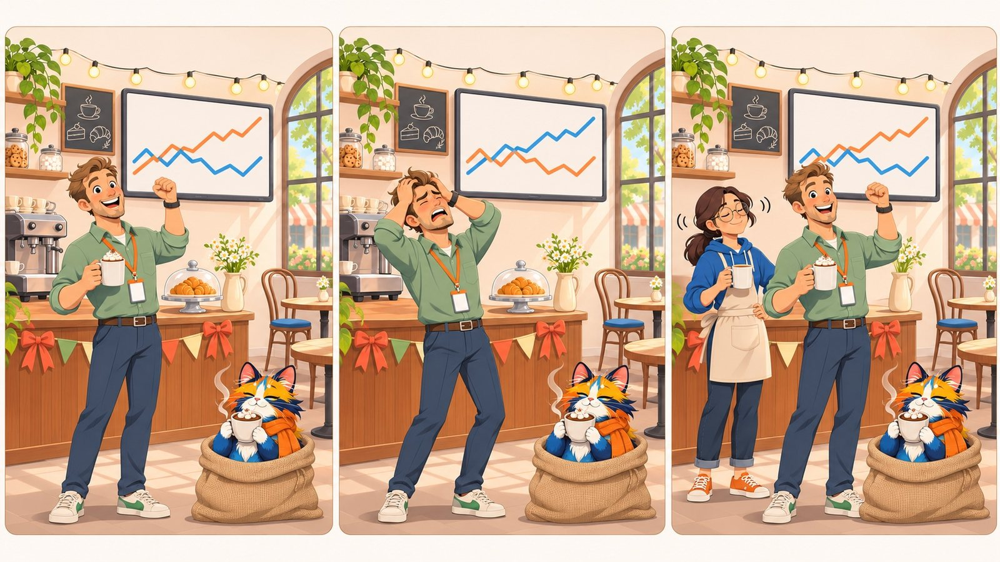

Сначала вспомним
С 1 октября в приложении появилась тёмная тема. В октябре заказов на 7% больше, чем в сентябре. Можно ли сказать, что тёмная тема подняла заказы?
Октябрь отличается от сентября погодой, сезоном и чужими релизами, а «до и после» приписывает теме всё это сразу. Нужна группа без темы в те же дни, а кому тему показать, решает монетка. Это было в шаге 1.
Тёмную тему можно включить в настройках. Включившие заказывают на 25% чаще остальных. Это эффект темы?
Кто включил тему, решали сами гости. Включают её те, кто часто открывает приложение и копается в настройках, а они и без темы заказывают больше. Сравниваем разных людей, а не приложение с темой и без. Это было в шаге 1.
Шаг 3 из 11
Шум есть всегда
После шага ты сможешь прикинуть, какую разницу даёт один шум, когда в группах ничего не меняется.

Две группы видят одно и то же приложение. Будут ли у них одинаковые цифры? Гости поделены честно: по хешу, каждый в своей группе. Проверим самое простое.
Алиса запускает тест, где ничего не меняется

Алиса, зачем тебе эксперимент, в котором обе группы видят старое приложение? Там же будет ноль.
В обеих группах заказ делают 10% зашедших в приложение. Изменений нет никаких. Какую разницу в конверсии покажет такой тест?
Выбери вариант.
По сто гостей в каждой группе
Каждый кружок — гость. Закрашен — сделал заказ. Шанс заказать у всех одинаковый, 10%. Перемешивай гостей и смотри, что выходит.
Две группы по 100 гостей; закрашены те, кто заказал
А если гостей тысячи?
Тот же тест без изменений, но в каждой группе по 1000 гостей. Запустим его 100 раз. Как думаешь, в скольких запусках какая‑нибудь из групп обгонит другую на 10% и больше? Например, 100 заказов против 110.
Здесь и дальше в курсе «на 10%» значит «на десятую часть»: 11 заказов на 100 гостей вместо 10. Это не «с 10% до 20%»: такой рост был бы вдвое, на 100%.
Теперь поменяй условие
Запусти тест.
Разницы конверсий между одинаковыми группами, гистограмма
Боб каждое утро смотрит дашборд

Обе группы снова одинаковые, в каждой по 1000 гостей в день. Вот конверсия по дням за две недели.
Лидер всё время меняется, хотя группы одинаковые
Пунктир — настоящая конверсия обеих групп, 10%.
Конверсия двух одинаковых групп по дням

Мяу, да всё одинаково! Это я раздал гостей монеткой, а заказывают они, когда проголодаются.
Боб нашёл систему
У нас в кафе автомат с игрушками и три кнопки. Я нашёл систему: правая кнопка выигрывает чаще, а после двух проигрышей надо жать среднюю.
После нажатия автомат либо пищит — выигрыш, — либо молчит. Понажимай кнопки 20–30 раз и найди, какая из них выигрышная.
Нажато 0 раз.
Какая кнопка выигрышная?
Выбери вариант.
Доля выигрышей у каждой кнопки
Зелёный пунктир — как автомат устроен на самом деле: 30% у любой кнопки.
Доля выигрышей у каждой кнопки
Идея из книги: Джозеф О’Коннор, Иан Макдермотт, «Искусство системного мышления»
Перетасуй ярлыки
Проверил новые фото блюд на 40 гостях. Без фото — 1.15 заказа на гостя за неделю, с фото — 1.55. Это +35%!

А если бы фото ничего не делали — такая разница бывала бы? Давай проверим, перетасовав ярлыки.
Если фото ничего не делают, то ярлыки раздал я, как попало. Вот и вся разница.
Вот эти 40 гостей. Число в кружке — сколько заказов гость сделал за неделю. Синие видели старое приложение (A), красные — с фото (B).
Идея Алисы: если фото ни на что не влияют, ярлыки A и B можно раздать заново как угодно, и заказы гостей от этого не изменятся. Перетасуем ярлыки и посмотрим, какие разницы получаются сами по себе.
Как думаешь, часто ли простая перетасовка даст разницу не меньше, чем у Боба, — 0.4 заказа на гостя в ту или другую сторону?
Выбери вариант.
40 гостей с ярлыками A и B
Разница B − A после каждой перетасовки
Разницы после перетасовок ярлыков, гистограмма
Идея из книги: Дэвид Шпигельхалтер, «Искусство статистики»
Три вопроса про шум
В A/A‑тесте по 2000 гостей в группе. Конверсия 10.4% против 10.0%. Значит, где‑то баг?
При 2000 гостях в группе конверсии одинаковых групп обычно расходятся примерно на 1 заказ из 100 гостей: 10.0 и 10.9% — обычное дело. Здесь разница меньше: 208 заказов против 200, на 4 заказа из 1000 гостей. Это нормальный шум.
Что происходит с разбросом между одинаковыми группами, если гостей в них становится больше?
Чем больше гостей, тем меньше случайные везения влияют на общую долю. В игре при 100 000 гостей в группе разница обычно меньше 3%: например, 10.0 и 10.3 заказа на 100 гостей.
Зачем запускать A/A‑тест, если в нём ничего не меняется?
A/A проверяет, что группы делятся правильно, а метрики считаются одинаково. И показывает, какие разницы бывают сами по себе. Если A/A раз за разом даёт разницу, какой шум почти не даёт, сначала ищи баг.
Разница есть всегда
- Даже одинаковые группы редко дают одинаковые цифры: кому‑то случайно достались любители заказывать.
- Чем меньше гостей, тем больше разброс. При 100 гостях в группе одна группа запросто обгоняет другую в полтора раза, при 1000 — на 10–25%, при 100 000 — на 1–3%. Проценты здесь относительные: «на 10%» — это 11 заказов на 100 гостей вместо 10.
- «Лидер» на дневном графике меняется сам по себе. По одному дню ничего не решаем.
- Проверить это можно и без формул: перетасовать ярлыки A и B много раз и посмотреть, часто ли случайная раздача даёт такую же разницу.
- Вопрос A/B‑теста: больше ли разница, чем обычно бывает без всякого эффекта.
Теперь у того, что мы сделали руками, есть названия:
- A/A‑тест
- эксперимент, где обе группы видят одно и то же; показывает, какие разницы бывают сами по себе, и проверяет, что всё считается правильно
- Перестановочный тест
- проверка перетасовкой: раздаём ярлыки групп заново много раз и смотрим, насколько обычна настоящая разница среди случайных
- Шум
- случайный разброс цифр, который есть даже без всякого эффекта